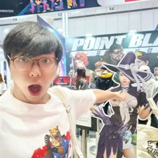

Onii Chan Wa Oshimai
Critiques:
Don't listen to the people who said this anime is only for pedophiles and lolicons.
The extreme fanservice is only present in the first episode and the opening.
Skip the opening if you don't like it. Read the manga instead. It's worth it.
This anime is a feel good slice of life with cute moments and you can feel happy watching Mahiro grow as a person.
The animation is great and feels so fluid and the art style is just eye candy.
The story is your normal slice of life stuff after the first episode after Mahiro gets turned into a girl. It's heartwarming to see Mahiro ...
Extremely cute and wholesome... but not made for hysterical puritans.
Originally, early complains about the show made me skip it. I actually tend to like _some_ fanservice, but not in combination with somewhat "childish" animation style.
Then, my daughter (8yo) had seen the first two episodes and enthusiastically recommended the show to me basically as a "must watch".
Long story short, we both enjoy it very much and consider it one of the best shows of this season.
It is extremely cute (the ending sequence is possibly the cutest thing Ive seen in recent anime) and wholesome, and occassionally funny, with some Dragon Maid meets Yuru Yuri vibes. ...
Don't believe other reviewers out there trash-talking this show, this is a good anime.
if you don't like it then it might not be for you.
As a manga fan myself since it came out I'm not one bit disappointed with this adaptation.
the animation is nothing but superb, Studio Bind is just showing off at this point that they can deliver god-tier animation like Mushoku Tensei on any show they touch upon.
sure some might not be fond of the fan service of this show but hey, if you don't like it then go watch the censored version. They got 2 versions for a reason ...
